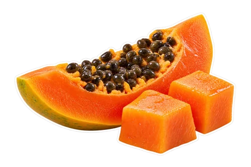
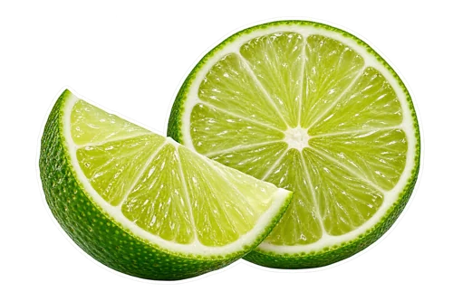

What you will need
Yield: 2 small glasses (about 2 cups). Final volume changes with fruit, straining, and liquid adjustments.

1½ cups ripe papaya cubes, peeled and seeded (about 210 g)- ½ cup plain yogurt (about 120 g)
- ½ cup cold water (120 ml), plus more as needed

2 teaspoons freshly squeezed lime juice- Optional: 1 teaspoon honey or maple syrup, to taste
- Optional: a few ice cubes if using fresh fruit
How to make it
Wash the outside of the papaya and lime. Cut the papaya open, scoop out all the black seeds, remove the skin, and cut the ripe flesh into cubes. Measure the prepared flesh rather than the whole fruit.
Put the water and plain yogurt in the blender first. Add the papaya and 2 teaspoons lime juice. If the papaya is frozen, use pieces your blender can handle and follow its instructions for frozen fruit.
Blend until smooth. Stop the blender before scraping down the sides, then blend again if needed. Add extra water a tablespoon at a time if the fruit is not circulating.
Taste before adding sweetener. Add the optional teaspoon only if you want it, or another small squeeze of lime if the blend tastes flat to you. Blend briefly to mix.
For a colder fresh-fruit smoothie, add a few ice cubes and blend again if your machine allows it. Pour into two small glasses and serve promptly.
What's in this drink
- Papaya: Looking at 100 g of reference papaya, USDA records 60.9 mg vitamin C and 37 mcg folate (DFE). USDA: Papayas, raw.
- Plain dairy yogurt: Looking at 100 g of reference plain dairy yogurt, USDA records 0.37 mcg vitamin B12 and 0.142 mg riboflavin (B2). USDA: Yogurt, plain, whole milk.
- Lime: Looking at 100 g of reference lime, USDA records 29.1 mg vitamin C and 2.8 g fiber. USDA: Limes, raw.
Nutrient figures are per 100 g of the USDA reference ingredient, not per serving.
The yogurt entry for papaya lime smoothie without banana describes whole-milk dairy yogurt, not a plant-based alternative.
Storage
Cover and refrigerate leftovers promptly. Follow the storage directions on opened packaged ingredients. FoodSafety.gov recommends refrigerating perishable food within two hours, or one hour above 90°F, and keeping the refrigerator at 40°F or below.
Short FAQ
Can I replace lime with lemon?
Yes, try the same 2 teaspoons as a starting amount, then taste. Lemon gives a different citrus finish, so adjust it to your preference rather than assuming it will taste identical.
Should papaya seeds go in the smoothie?
No. This recipe measures peeled, seeded flesh. Remove the seeds before measuring or freezing the fruit.
Can I use papaya nectar?
Nectar is a different ingredient from prepared fruit. It changes the liquid and sweetness balance, so it is not the direct substitution for the measured cubes in this recipe.